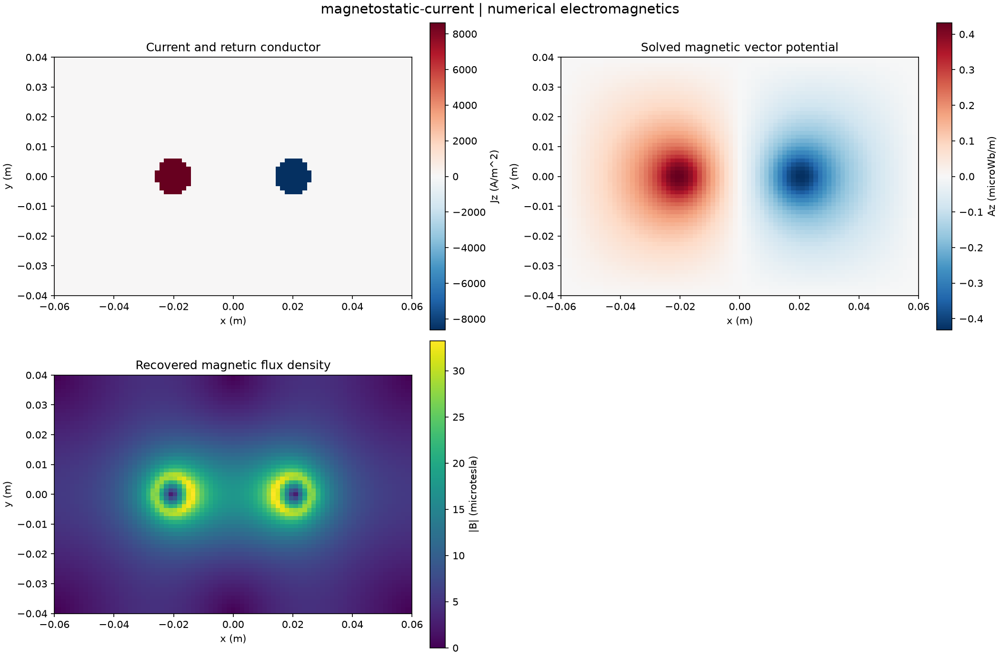

Reproducible numerical electromagnetics. Units and field components are printed on the scientific axes. Peak phasors use exp(+i omega t); outgoing waves use exp(-i k r).
Sealed numeric archive | Summary CSV | Physical parameters | Run request | Source and environment

| ampere_current_a | 0.9999999999999964 |
|---|---|
| ampere_relative_error | 3.552713678800501e-15 |
| field_energy_j_m | 3.8234603776521e-07 |
| net_current_a | 0.0 |
| solver_residual | 1.9982950399138232e-14 |
| source_work_j_m | 3.8234603776521036e-07 |
These are simulations, not hardware measurements. Mesh, boundary, truncation and statistical uncertainty require distinct convergence checks. Singular or unilluminated data use explicit masks.
Source revision: 255b9ec965941d1fc97a04b9f7e2101e959fbeca.
Dirty checkout: False.
Configuration SHA-256: 88cb787df7963a93a176009db99c214e6900facd7f28b0d6c311ad2b0bcd4427.
Replay preserves original source and parameter provenance. SHA-256 manifests detect changed bytes; they are unsigned integrity records, not certificates of physical validity.